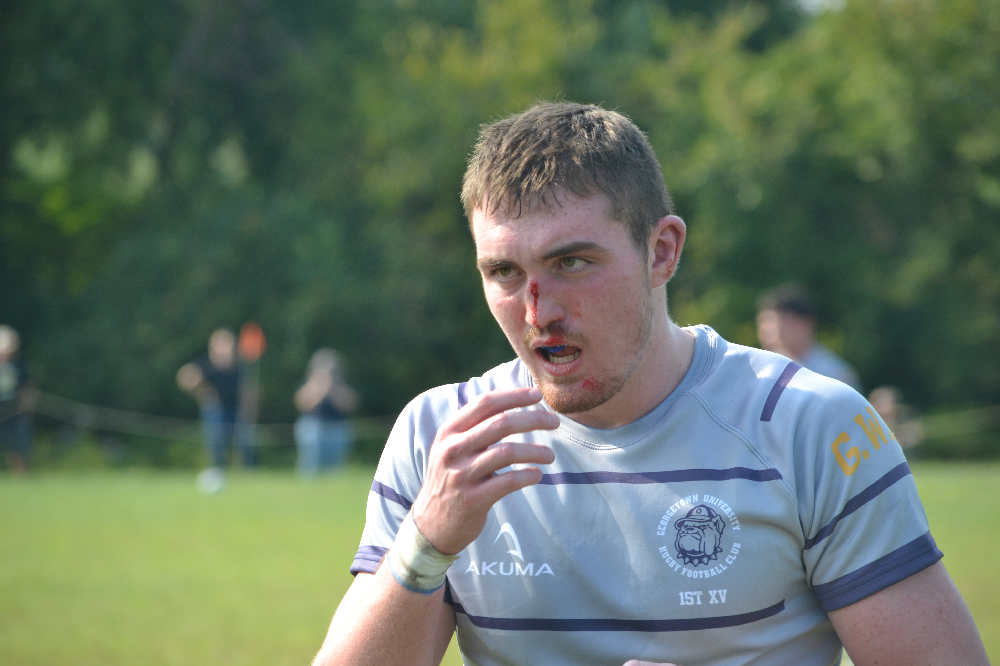
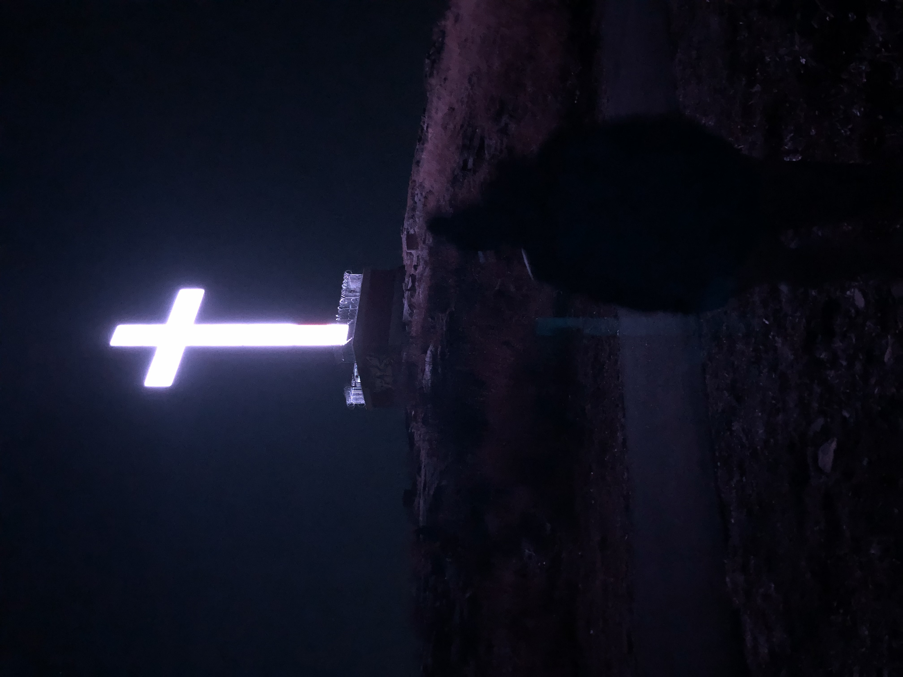
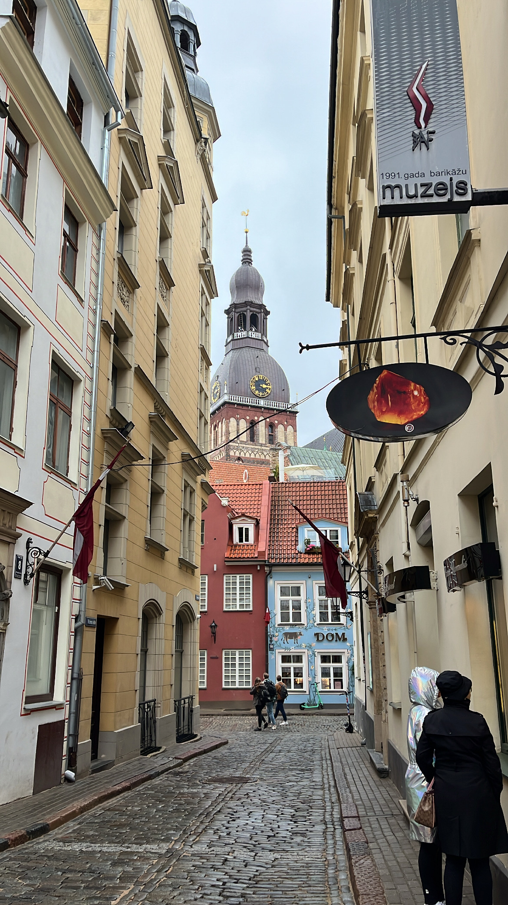

Hello, my name is Nick Frayter and I am 21 years old. Originially, I am from Connecticut,
but currently study in Washington, DC at Georgetown University. I am a senior
in the McDonough School of Business majoring in Operations & Information Management and
minoring in Economics. After graduation, I am looking for opportunities in front-end
development, so I programmed this website using HTML, CSS, and Javascript to showcase my skills
and tell my story.
My Interests

Rugby
My favorite sport is rugby. I currently play on Georgetown's team which is ranked
#4 in the country. Here is me after I broke my nose during a game (bad experience but cool photo!)
Teaching English
On the side, I teach English online via a platform called ITalki. This has been an
incredible experience that has allowed me to meet people from all over the world
and hear their fascinating stories.

Exploring 'Haunted' Places
I enjoy daring adventures into spooky places. Here is an image I took at Holy Land USA,
an abandoned amusement park located in Waterbury, CT.

My Favorite City
Here is a picture of my favorite city in the
world and one I spent a large part of my childhood.
Can you guess where this is?
(Hover here for the answer)
Riga, Latvia
Также я свободна говорю на русском языке, так как мои родители выросли в Латвии во время Советского союза. Я даже создал русский клуб в моём университете чтобы
научить своих одноклассников о русской культуре и чтобы построить русское сообщество на кампусе.
Professional Experience
My experience lies at the intersection of finance and technology.
Due to my technical major, I have experience in a variety of softwares including Python, Excel VBA,
SQL, JMP, etc. However, my strong liberal arts curriculum has allowed to me apply these skills in a business
context and not only succeed, but thrive in my roles.
Interactive Brokers (June 2020 - August 2022)
The past three summers I interned in the finance and compliance departments of Interactive Brokers,
the largest online trading platform in the US. Some projects I worked on include:
Analyzed site layout and proposed interface changes to UI/UX designers and front-end developers.
Calculated client portfolio metrics (Alpha, Beta, Sharpe ratios) to help client better understand their portfolios.
Systematized Blue Sheet reporting, allowing the company to file 40 reports per day on flagged trades by the SEC and FINRA.
Jaxis (March 2022 - May 2022)
My internship as a cryptocurrency research analyst for Jaxis, a crypto analytics startup was my first
experience conducting and writing research from scratch. With no template to guide me, I learned how to
be a self-starter and think creatively. Other responsibilities include:
Performed fundamental analysis on different cryptocurrencies using both qualitative and quantitative data.
Generated 3 research reports describing the technology, purpose, and outlook of various crypto projects, helping clients make more informed investment decisions.
Collaborated with the CEO on how to improve the structure and content of the reports in order to improve readability for inexperienced crypto investors and website SEO.
MZZ Ventures at GWU (Sept 2019 - Dec 2020)
MZZ Ventures was my first experience in consulting. Applying as a freshman, I had no idea what consulting even was.
However, through experience and weekly presentations from the e-board, I was quickly able to learn. Working with startups in Uganda
was extremely rewarding as it is a developing country where its citizens do not have the same opportunities we have here in the US.
Other responsibilities include:
Collaborated with a team of 5 in creating deliverables for a Ugandan fintech startup, describing the economic impact of their services, and ultimately helping the company secure a partnership with the Bank of Uganda.
Performed SWOT analysis looking at competitors in the African fintech market and identifying opportunities for profitability, helping the CEO realize Uganda’s untapped digital remittance market and create a remittance service.
Oversaw junior consultants’ projects and acted as a liaison between our team and the startup’s CEO.


![]()


![MZZ]()